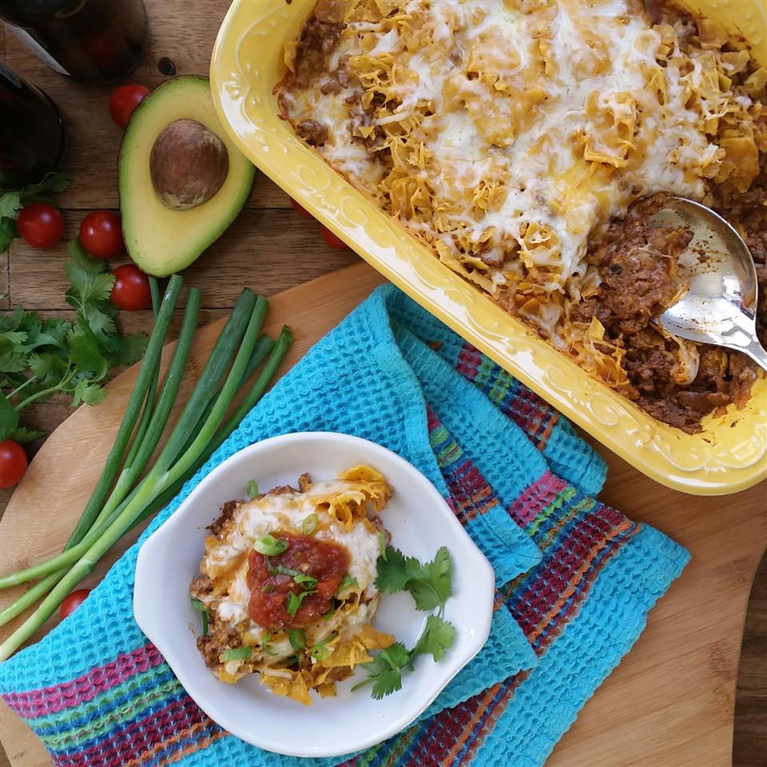

Easy Taco Casserole

A delicious and easy Taco Casserole
Quick and easy taco entree for a last minute meal. Top with chopped tomato, onion, and lettuce if desired.
Ingredients
- 1 pound ground beef
- 1 cup salsa
- ½ cup chopped onion
- ½ cup mayonnaise
- 2 tablespoons chili powder
- 1 teaspoon ground cumin
- 2 cups crushed tortilla chips, divided
- 4 ounces shredded Cheddar cheese, divided
- 4 ounces shredded Monterey Jack cheese, divided
Steps
- Preheat oven to 350 degrees F (175 degrees C).
- Cook and stir ground beef in a large skillet over medium-high heat until crumbly, evenly browned, and no longer pink, 5 to 7 minutes.
Drain and discard any excess grease. Stir salsa, onion, mayonnaise, chili powder, and cumin into the beef. Remove from heat.
- Spread about half the ground beef mixture into the bottom of a 2-quart casserole dish. Spread about half the tortilla chips in a layer atop the beef mixture.
Layer about half of each of the Cheddar and Monterey Jack cheeses over the tortilla chip layer.
Repeat layers with remaining ingredients, ending with Monterey Jack cheese. Cover dish with aluminum foil.
- Bake in preheated oven until the cheese is melted in the middle, about 30 minutes.